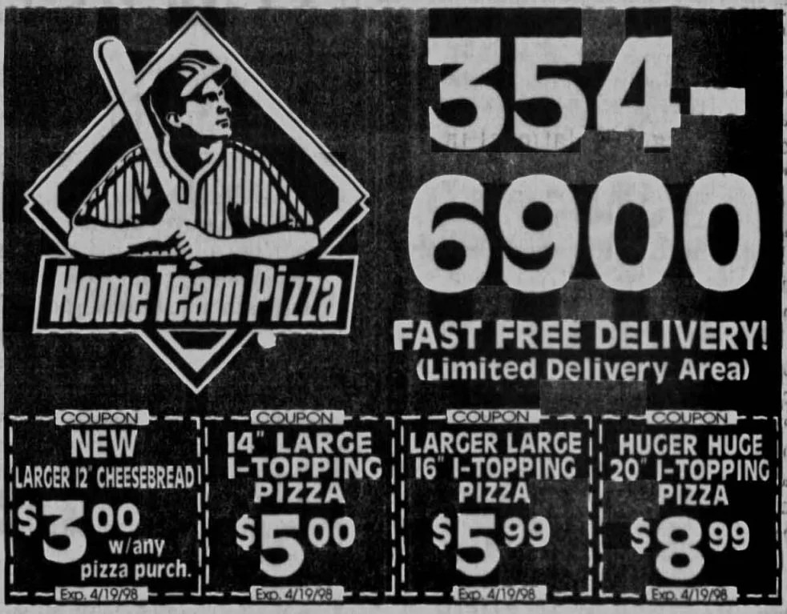
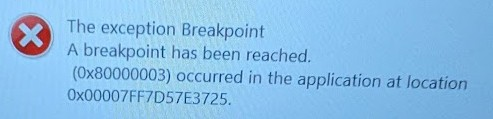
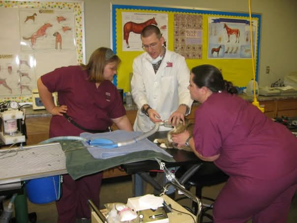
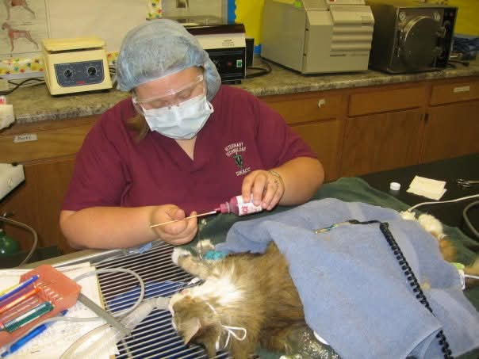
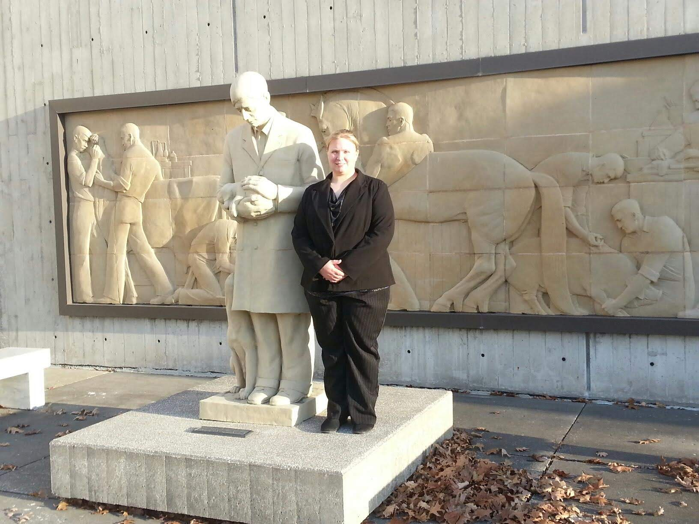
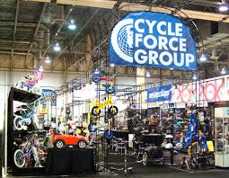
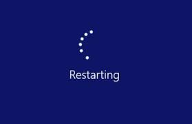
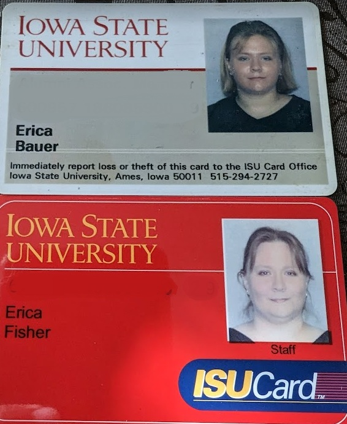

Starting Out Without a Map

My career has never followed a straight line. My first attempt at attending Iowa State was driven by a dream of becoming a veterinarian. At that time, I didn’t yet know I was neurodivergent. I never struggled with learning, throughout high school I rarely needed to study and could pick up information simply by being present. But university life introduced an entirely different structure. Lectures were bigger, patterns were less obvious, expectations were more abstract, and there were far more sensory demands and distractions than I’d ever experienced. The academics weren’t harder, but the environment was.
I quickly realized that the tools I had relied on in high school—intuition, pattern recognition, absorbing information without conscious effort—weren’t enough in a setting where the structure itself felt unpredictable. I didn’t yet have the vocabulary to understand why, but I knew I was out of sync with the system around me. Amid those struggles, though, I found my people: other “odd” students who loved computers, tinkering, and late-night conversations about technology. That sense of connection became one of the bright spots of that time.
Patchwork Jobs and a Toxic Workplace
After leaving Iowa State the first time, I pieced together a living through a series of jobs: working in food service, delivering pizza, icing donuts in a grocery store bakery, a stint at Walmart, and eventually landing at a company that turned out to be extremely unhealthy for its employees.
At that company, staff turnover was so high that by the time I had been there nine months, I had inherited the work of five people who had been terminated. That included online and website sales management, on-site technology duties, and other responsibilities far beyond my original role. The environment was unstable and exploitative.
The one bright spot there was the international purchasing manager, who was in the U.S. on a work visa from China. She was smart, kind, and deeply committed to her job, and my best friend there. However, the company treated her terribly. At one point, leadership tried to force her to sign a document taking the blame for a financial loss that was actually caused by bad forecasting numbers from the company president. Watching her be scapegoated, and then having my own position threatened when I drew boundaries and stood up for myself, became a turning point.
That experience pushed me back to school. I realized I needed more stability, more options, and a way to build a career on something other than surviving bad workplaces.
Back to School: Veterinary Technology and Web Work
I enrolled in an associate’s program in Veterinary Technology. During that time, I worked in a work-study position that pulled me back into web design and technical tasks. I was building and updating web content while learning animal medicine and clinical skills in my coursework.
After earning my associate’s degree and license, I went into the veterinary field. I loved the animals and the medical problem-solving, but the work was emotionally intense and financially unsustainable. The pay wasn’t enough to cover my bills, and I saw up close why burnout is so common in veterinary medicine: long hours, high emotional load, and a constant stream of difficult cases with limited resources.
Academic Redemption and a Hard Choice
Because I still cared about veterinary medicine, I returned to Iowa State to repair my academic record and give myself another shot at vet school. This time, with more self-awareness and experience, I was able to bring my grades up significantly. Between improved academics and my hands-on work experience, I became part of the small percentage of applicants (around 6% nationwide) who are accepted to veterinary school without a completed bachelor’s degree.
But getting in did not make the decision simple. At the time I was accepted, only about 40% of veterinary graduates were securing jobs. I was also at a point in my life where I wanted to separate from my now ex-husband, and I had already taken a job at a bicycle import company that provided better pay, steady hours, and holidays off. I now understood the emotional toll of veterinary work more clearly, and I wasn’t convinced that the debt, instability, and burnout were worth it.
In the end, I made the difficult choice to decline the vet school offer. It wasn’t a failure; it was a deliberate re-routing based on what I had learned about myself and the realities of the profession.
Ten Years in Bicycles and Technology
The bicycle importer became the setting for the next major chapter of my career. I started there as a bookkeeping assistant, but I didn’t stay in that narrow lane for long. I drew on the scattered threads of my earlier experiences with web design, systems thinking, comfort with technology, and a knack for learning tools quickly and started taking on more responsibilities.
Over time, I learned SQL Server management, ERP administration, and server and hardware management. I worked closely with international vendors, supported operations, and helped translate between technical systems and business needs. Eventually, I moved into a combined role as accounting manager and enterprise architect for the company. It was an unusual blend of responsibilities, but it fit how my brain works: seeing patterns, connecting systems, and solving problems across departments.
Those ten years also deepened my global perspective. Collaborating with partners in Japan, China, and elsewhere showed me how much business, culture, and human relationships are intertwined. That experience later became a core part of my cultural experiences and global citizenship reflections.
Building Systems That Support People
After a decade in the bicycle industry, I eventually transitioned into higher education and systems work at Iowa State, where I now focus on admissions technology and process design. In this role, I manage and help improve systems that support students, staff, and campus partners; things like document workflows, letter generation, and data processes that most people never see but depend on every day.
In a way, my entire career journey has been about learning how to connect the human side of work with the technical side of systems. From veterinary clinics to bike warehouses, from toxic workplaces to supportive academic environments, I’ve seen how much it matters when the tools and structures around people are thoughtfully designed.
My neurodivergence, my non-linear path, and my wide range of job experiences all play into the way I approach my work now. I bring empathy for people who are struggling inside systems that don’t quite fit them, and I bring a problem-solver’s mindset for how to make those systems better.
It’s not the career I imagined when I first set out to become a veterinarian—but it’s a career that makes sense for who I am, how I think, and how I want to contribute to the world.